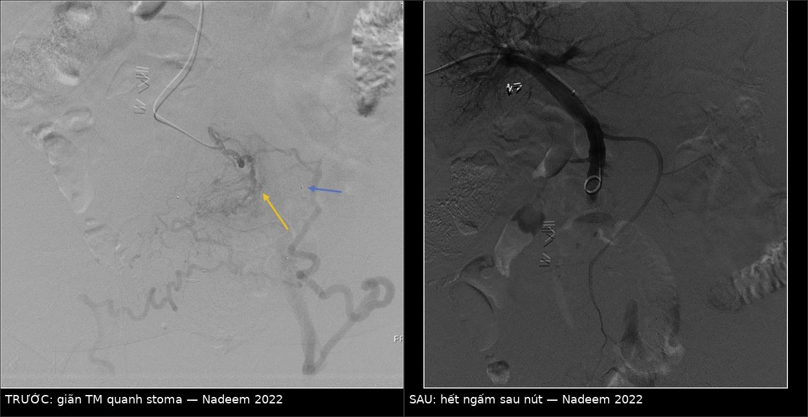
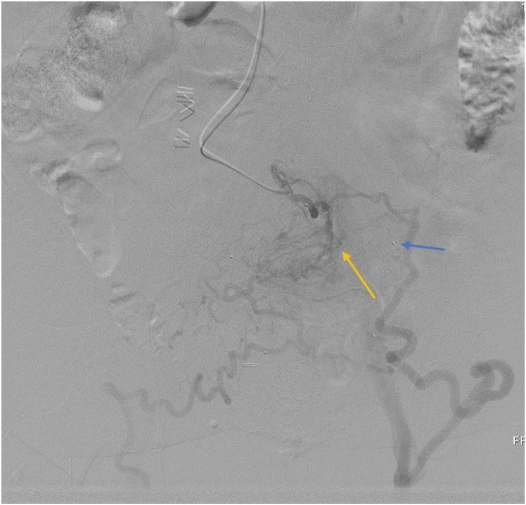
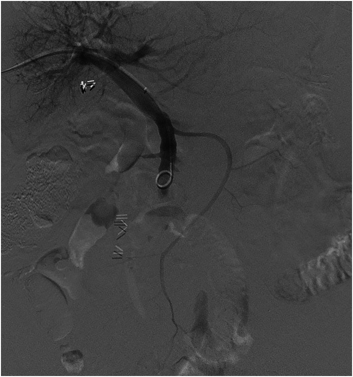
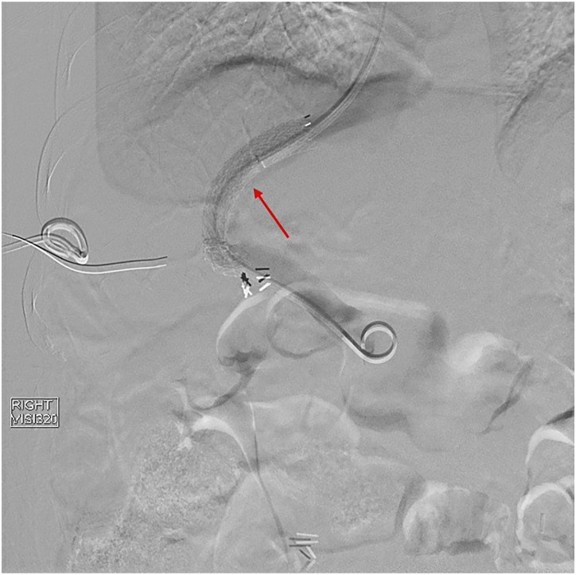
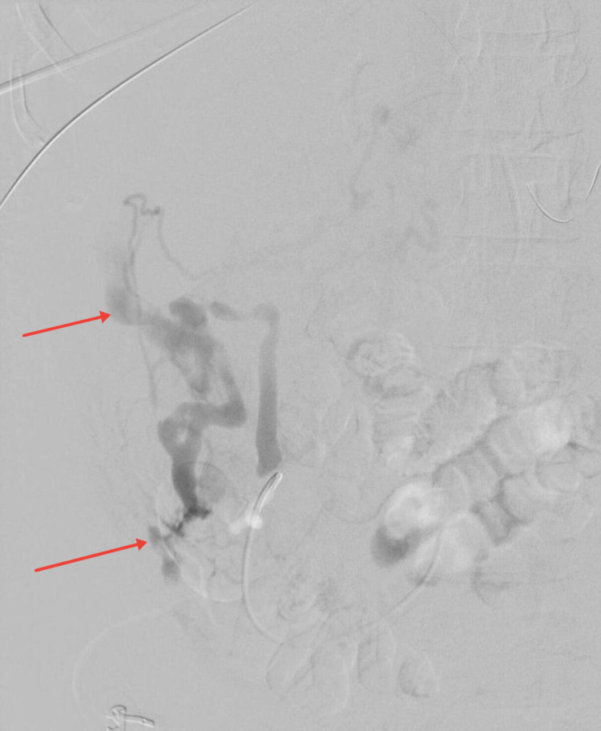

187 — Giãn tĩnh mạch lạc chỗ: chọn TIPS, BATO/ATO hay PTO / Bleeding ectopic varices — choosing TIPS, antegrade obliteration or percutaneous transhepatic obliteration
Tags: pattern:gian-tinh-mach pattern:xuat-huyet-tieu-hoa vung:tieu-hoa vung:mach-cua vung:phuc-mac score:PSG protocol:CT-cua-thi protocol:DSA-venogram
Mức chắc chắn (certainty): tổng hợp y văn (literature synthesis) — khung quyết định và số liệu dịch tễ lấy từ bài tổng quan 2026 (Kim DH et al., Cardiovasc Diagn Ther, PMC13554335, CC BY-NC-ND), số liệu kỹ thuật từ loạt ca đường vào qua da (Nadeem IM et al., Acta Radiol Open 2022, PMC9272059, CC BY), ca giãn tĩnh mạch phúc mạc vỡ (Ohs Z et al., Cureus 2021, PMC8460490, CC BY) và tổng quan TIPS cho giãn lạc chỗ (Shalaby S et al., J Clin Med 2024, PMC11476950, CC BY). Không có RCT so sánh trực tiếp TIPS với ATO/PTO — mọi khuyến cáo dưới đây là ý kiến chuyên gia/loạt ca, không phải bằng chứng mức cao.
Câu hỏi gốc của bài: bệnh nhân xơ gan vào viện vì đi ngoài máu đỏ sẫm / chảy máu hậu môn nhân tạo / nôn máu mà nội soi dạ dày–thực quản bình thường. Nội soi ruột non thấy tổn thương gồ lên, có mạch đập ở tá tràng/hỗng tràng; hoặc bệnh nhân không thể soi tới (phúc mạc, quanh hậu môn nhân tạo). Vậy: có làm TIPS không, hay chỉ nút tại chỗ? Chọn đường vào nào? Nút bao nhiêu "cuống" thì đủ? Và vì sao TIPS đơn thuần lại hay tái chảy máu ở nhóm này? Điểm tựa: giãn tĩnh mạch lạc chỗ có thể chảy máu ở gradient áp lực cửa–chủ (portosystemic pressure gradient — PSG) THẤP HƠN 12 mmHg — ngưỡng kinh điển của giãn thực quản. Vì vậy hạ áp cửa đơn thuần không đủ: phải bít đúng "ổ" tại chỗ (ATO/BATO/PTO), và/hoặc phối hợp với TIPS khi cần hạ áp toàn thể.
1. Tổng quan — vì sao giãn lạc chỗ "khó" hơn giãn thực quản + ngưỡng định lượng
A. Bệnh học (pathology) và cơ chế chảy máu:
- Định nghĩa: giãn tĩnh mạch lạc chỗ = tuần hoàn bàng hệ cửa–chủ (portosystemic collaterals) nằm ngoài vùng dạ dày–thực quản. Về mặt giải phẫu, đây là các nhánh tĩnh mạch tạng nối với hệ chủ qua đường sau phúc mạc, thành bụng, đám rối trực tràng, mô quanh hậu môn nhân tạo hoặc mô liên kết phúc mạc — tức là những nơi không có "ống tiêu hóa trong lòng" để soi và tiêm keo (bài 181 chỉ phủ nhóm dạ dày qua shunt dạ dày–thận).
- Vì sao vỡ: thành mạch mỏng, ít cơ trơn, không có van bảo vệ; áp lực trong túi giãn gần bằng áp lực cửa, trong khi thành chịu lực cơ học kém hơn tĩnh mạch thực quản (được nâng đỡ bởi lớp dưới niêm và trung thất). Thêm chấn thương cơ học tại chỗ: ma sát của túi hậu môn nhân tạo (stoma appliance), nhu động ruột, dải xơ dính sau mổ kéo căng mạch (đây là lý do phẫu thuật ổ bụng/khung chậu là yếu tố nguy cơ — dính làm tắc dòng ra, đẩy máu vào collateral).
- Vì sao chảy máu ở PSG thấp: túi giãn lạc chỗ thường có lưu lượng cao, đường kính lớn, ít "van trở kháng" → theo Laplace, sức căng thành (wall tension) ∝ áp lực × bán kính; chia cho bề dày thành mỏng (ít cơ trơn) → ứng suất thành (wall stress) cao hơn hẳn giãn thực quản cùng mức áp lực. Do đó PSG 8–10 mmHg vẫn có thể vỡ trong khi giãn thực quản cùng mức áp lực thì chưa.
B. Ngưỡng định lượng bắt buộc (cửa 1 Argon):
| Đại lượng | Con số đã kiểm chứng | Ý nghĩa thực hành |
|---|---|---|
| Tỷ lệ trong toàn bộ chảy máu do giãn tĩnh mạch | 1–5% (PMC11476950); ~5% (PMC13554335) | Hiếm → mọi khuyến cáo đều mức thấp, phải cá thể hóa |
| Tử vong do chảy máu lạc chỗ | tới 40% (nghiên cứu UK, PMC13554335); tử vong giãn thực quản đã giảm 23,6% → 18,3% | Nhóm lạc chỗ không được hưởng lợi từ tiến bộ điều trị như giãn thực quản |
| Tỷ lệ theo vị trí (173 ca, Nhật) | trực tràng 77 ca, tá tràng 57 ca, còn lại hỗng–hồi tràng/đại tràng | Trực tràng hay gặp nhất nhưng ít chảy máu nhất |
| Tỷ lệ chảy máu theo vị trí (169 ca) | hậu môn nhân tạo 26%, tá tràng 17%, trực tràng 8% | Chảy máu không tỷ lệ thuận với tần suất gặp |
| Vị trí trong 161 ca khác | hậu môn nhân tạo 27%, hỗng–hồi tràng 18%, tá tràng 17%, đại tràng 15% | Ba nhóm này chiếm ~60% ca chảy máu |
| Tá tràng | 17–32,9% tổng số giãn lạc chỗ; tử vong tới 40%; hay gặp trong tăng áp cửa ngoài gan/huyết khối tĩnh mạch | Chảy máu ồ ạt, khó cầm bằng nội soi |
| Trực tràng | Nguy cơ chảy máu 0,5–3,6%; ~8% ca chảy máu | Thường tình cờ; phân biệt với trĩ (cách rìa hậu môn > 4 cm) |
| Hậu môn nhân tạo | Nguy cơ chảy máu cao nhất (26–27%) nhưng tử vong thấp 3–4% | Ép tay cầm máu được — khác biệt lớn về tiên lượng |
| Hỗng–hồi tràng | ~18% ca; chảy máu hoạt động chỉ 5,5% | Biểu hiện chảy máu tiêu hóa ẩn (obscure GI bleeding) → cần capsule/enteroscopy |
| Tái chảy máu sau nút ngược dòng (BRTO) | 17–31% | Nút không hạ áp cửa → tái phát |
| Nút keo dưới EUS so với tiêm qua nội soi thường | Tái chảy máu > 48 giờ: 18,5% vs 44,7% | Doppler/EUS giúp xác định mạch nuôi trước khi tiêm |
| Tái phát tá tràng sau điều trị nội soi | 15,8% (19 bệnh nhân) | Cần kiểm tra lại sau 1–3 tháng |
C. TẠI SAO ảnh trông như vậy (vật lý hình ảnh):
- CT thì tĩnh mạch cửa (portal venous phase): giãn lạc chỗ ngấm thuốc BẰNG tĩnh mạch cửa cùng thì (cùng nguồn máu, cùng nồng độ i-ốt) — đây là tiêu chuẩn nội tại để phân biệt với hạch (ngấm ít hơn, hình bầu dục, có rốn mỡ) và mô u phúc mạc (ngấm không đều, có thành phần mô mềm). Chúng nối liền với một nhánh tĩnh mạch tạng — luôn truy ngược trên MPR để tìm nhánh nuôi (afferent) và nhánh thoát (efferent).
- DSA/venogram: đây là "xét nghiệm thật sự". Nguyên lý chọn thủ thuật nằm ở hướng dòng: bơm từ nhánh cửa → thấy afferent → túi giãn → efferent. Có một efferent lớn, dễ bít (shunt dạ dày–thận, shunt quanh stoma) → nút ngược dòng (RTO/BRTO); không có efferent đơn độc hoặc efferent nhiều → phải nút xuôi dòng (ATO/BATO), tức bít chính afferent rồi bơm chất xơ hóa vào túi.
- Vì sao nút xuôi dòng cần bóng/coil chặn dòng: chất lỏng (n-BCA, ethylene vinyl alcohol, natri tetradecyl sulfat, ethanolamine oleate) trôi theo dòng. Nếu không chặn, keo đi vào tĩnh mạch hệ thống hoặc tạng lành → tắc mạch phổi, nhồi máu ruột. Nguyên tắc: chặn afferent bằng bóng/coil/plug → bơm chất xơ hóa vào túi → giữ bóng vài phút cho keo trùng hợp.
2. Mẫu hình + chẩn đoán phân biệt theo vị trí (Gamut)
- Nhóm A — Soi tới được (tá tràng, hỗng–hồi tràng, đại tràng, trực tràng): nội soi ± EUS là bước đầu; thất bại/tái phát → can thiệp mạch.
- Nhóm B — Không soi tới được (hậu môn nhân tạo, phúc mạc, sau phúc mạc, đường mật): bắt buộc CT có thì cửa + can thiệp mạch, không có "phương án nội soi dự phòng".
- Nhóm C — Có shunt thoát lớn (gastrorenal, parastomal, splenorenal): nút ngược dòng khả thi, rủi ro thấp hơn nút xuôi dòng.
- Nhóm D — Tăng áp cửa toàn thể nặng + còn giãn thực quản nguy cơ cao/báng khó trị: TIPS ± nút — vì cần hạ áp toàn thể, không chỉ bít ổ.
Mnemonic "C–O–D" — ba câu hỏi chọn thủ thuật:
- Có shunt thoát đơn độc, dễ tiếp cận? → RTO/BRTO (bài 181).
- Occlusion tại chỗ là đủ (không có shunt thoát, hoặc TIPS chống chỉ định)? → ATO/BATO (đường tĩnh mạch cửa hoặc lách) hay PTO (qua da xuyên gan).
- Decompress toàn thể cần (giãn thực quản kèm, báng khó trị, nguy cơ tái phát cao)? → TIPS ± ATO/RTO.
Viết tắt dùng trong bài: ATO (antegrade transvenous obliteration) = nút xuôi dòng qua đường tĩnh mạch; BATO = ATO có bóng chặn dòng (balloon-occluded); PTO = nút qua da xuyên gan (percutaneous transhepatic obliteration); PATVO = nút xuôi dòng qua da (percutaneous antegrade transvenous obliteration) — cùng nhóm với BATO/PTO; RTO/BRTO = nút ngược dòng (bài 181); PSG/HVPG = gradient áp lực cửa–chủ.
Vì sao TIPS đơn thuần hay thất bại ở giãn lạc chỗ (điểm cốt lõi): TIPS làm giảm PSG xuống < 12 mmHg, nhưng túi giãn lạc chỗ có thể vẫn còn dòng "xuôi dốc" (downhill flow) từ nhánh tạng vào hệ chủ vì trở kháng đường thoát của nó rất thấp. Kết quả: shunt thông tốt trên hình nhưng vẫn chảy máu. Vì vậy y văn hiện tại nghiêng về TIPS + nút đồng thời, hoặc nút đơn thuần khi TIPS chống chỉ định.
3. Bảng so sánh phân biệt (ma trận đối chiếu)
| Thực thể (entity) | Hình ảnh điển hình | Chốt vào (rule-in) | Chốt loại (rule-out) | Gợi ý xác nhận |
|---|---|---|---|---|
| Giãn tá tràng | CT thì cửa: túi mạch ngấm thuốc bằng tĩnh mạch cửa, nằm giữa D2–D3, có nhánh nuôi từ SMV/tĩnh mạch tá tụy; thường kèm huyết khối/tắc tĩnh mạch lách–cửa | Tăng áp cửa ngoài gan + huyết khối tĩnh mạch + nội soi thấy tổn thương gồ có mạch | Niêm mạc tá tràng lành, không có nhánh nuôi rõ → loét/viêm | CT 3 thì + dựng 3D; EUS-Doppler; DSA |
| Giãn hỗng–hồi tràng | Nốt/mảng ngấm thuốc trong thành ruột non, thay đổi theo thì; thường sau mổ/dính | Chảy máu tiêu hóa ẩn + capsule/enteroscopy thấy mạch giãn | Nang ruột non/túi thừa (không ngấm mạnh thì cửa) | CT enterography thì cửa + DSA |
| Giãn quanh hậu môn nhân tạo | Đám mạch quanh stoma, ngấm thì cửa, thấy rõ trên CT với marker trên da | Chảy máu nhỏ giọt tái diễn quanh stoma + ép tay cầm | Viêm da quanh stoma/chảy máu niêm mạc stoma (không có mạch giãn) | CT thì cửa; DSA qua da đường cửa/qua TIPS |
| Giãn trực tràng | Đám mạch dưới niêm cách rìa hậu môn > 4 cm, nối tĩnh mạch trực tràng trên–giữa/dưới | Tăng áp cửa + mạch giãn liên tục với tĩnh mạch trực tràng trên | Trĩ (dưới 4 cm, không nối hệ cửa) | Nội soi trực tràng; CT thì cửa |
| Giãn phúc mạc/sau phúc mạc | Máu tụ/dịch quanh gan–lách + ổ thoát thuốc cản quang, không có tổn thương nhu mô | Sốc giảm thể tích + máu bụng + xơ gan, không có khối u vỡ | HCC vỡ (khối ngấm thuốc thì động mạch, AFP cao), vỡ lách, chửa ngoài tử cung | FAST → CT 3 thì → DSA nút mạch |
| TIPS + nút phối hợp | Shunt thông + không còn túi giãn trên venogram sau nút; PSG giảm ≥ 20% hoặc < 12 mmHg | Giãn lạc chỗ + giãn thực quản nguy cơ cao/báng khó trị | Chỉ có giãn lạc chỗ đơn độc, không tăng áp toàn thể nặng → cân nhắc nút đơn thuần | DSA + đo PSG trước/sau |
| ATO/BATO/PTO đơn thuần | Venogram: afferent bị bít (bóng/coil), túi giãn không còn ngấm, efferent trống | TIPS chống chỉ định (suy tim, mPAP > 45, HE nặng, nhiễm trùng) hoặc không có shunt thoát | Nhiều afferent lớn không kiểm soát được → nguy cơ sót nguồn, cần TIPS | DSA; chụp kiểm tra sau 5–10 phút |
| Phẫu thuật (cuối cùng) | Không có hình ảnh đặc hiệu — dựa trên thất bại của nội soi + can thiệp | Thất bại cả nội soi và can thiệp mạch | Còn phương án can thiệp khả thi → không mổ | Hội chẩn đa chuyên khoa |

Trái: trước — bơm thuốc qua nhánh SMV, đám giãn tĩnh mạch quanh stoma hiện rõ (mũi tên vàng), marker trên da đánh dấu vị trí stoma (mũi tên xanh). Phải: sau nút (keo + hạt + thrombin) — túi giãn không còn ngấm, chỉ thấy pigtail trong SMV. Đây là ATO/BATO qua da xuyên gan (trong y văn gọi PATVO). Nguồn: Nadeem IM et al., Acta Radiol Open 2022 (PMC9272059) Fig. 1 và Fig. 5, CC BY 4.0 — ảnh ghép letterbox, đã thay đổi (ghép + dải chú thích).Ba đường vào và một nguyên tắc chặn dòng
- Xuyên gan (transhepatic): ưu tiên khi nhánh cửa trong gan còn thông; thuận lợi cho giãn đường mật, phúc mạc, khung chậu. Đây là đường dùng trong loạt ca PATVO ở trên (17/17 thủ thuật).
- Xuyên lách (transsplenic): khi tĩnh mạch cửa tắc, gan khó tiếp cận, hoặc tĩnh mạch lách là nhánh nuôi chính — hay dùng cho quanh stoma, đại tràng, khung chậu.
- Qua TIPS đã có (trans-TIPS): đường vào tốt nhất khi bệnh nhân đã/đang có TIPS — vừa chụp được toàn bộ hệ cửa, vừa nút được tổn thương ở bất kỳ vị trí.
- Nguyên tắc chặn dòng: bóng (balloon) hoặc coil/plug ở afferent trước khi bơm chất lỏng → giảm/ổn định dòng → giảm nguy cơ tắc mạch không đích. Với dòng cao, dùng n-BCA : lipiodol = 1:2 hoặc 1:3 (ít lipiodol hơn = keo trùng hợp nhanh hơn, ít trôi xa).
4. Protocol can thiệp + theo dõi
A. Hồi sức và chẩn đoán (làm song song, không chờ):
- Hạn chế truyền máu: đích Hb 7 g/dL ở người huy động ổn định (truyền nhiều làm tăng áp cửa, tăng tái chảy máu) — theo khuyến cáo chung cho chảy máu do tăng áp cửa (PMC11476950).
- Thuốc co mạch tạng + kháng sinh dự phòng ngay khi nghi chảy máu do tăng áp cửa, kháng sinh duy trì 2–5 ngày: meta-analysis cho lợi ích sống còn 9,1% (PMC13554335).
- Nội soi trong 12 giờ nếu huy động ổn định — mục tiêu tìm ổ chảy máu + loại trừ giãn thực quản/dạ dàng (vì 2 nhóm có thể cùng tồn tại).
- CT 3 thì (động mạch – cửa – muộn), lát 1–2 mm + dựng 3D cho mọi ca nghi giãn lạc chỗ: xác định afferent/efferent, huyết khối tĩnh mạch, kích thước túi, đường vào khả thi.
B. Quyết định thủ thuật (mermaid):
flowchart TD
A[Chay mau nghi giãn lạc chỗ] --> B[Hoi suc: Hb dich 7 g/dL, thuoc co mach, khang sinh 2-5 ngay]
B --> C[Noi soi trong 12 gio: co tiep can khong?]
C -->|Soi toi duoc| D[Dieu tri noi soi ± EUS-Doppler: tien keo/thrombin]
C -->|Khong soi toi duoc| E[CT 3 thi + dung 3D: map afferent va efferent]
D -->|That bai hoac tai phat| E
E --> F{Co shunt thoat don doc de tiep can?}
F -->|Co| G[RTO/BRTO: nut nguoc dong]
F -->|Khong| H{TIPS co chong chi dinh?}
H -->|Khong| I[TIPS ± ATO/RTO dong thoi]
H -->|Co| J[ATO/BATO qua tinh mach cua hoac lach, hoac PTO qua da xuyen gan]
J --> K[Chan afferent bang bong hoac coil/plug]
K --> L[Bom chat xo hoa: n-BCA lipiodol 1:2 den 1:3 neu dong cao]
I --> M[Do PSG: dich duoi 12 mmHg]
G --> N[Chup kiem tra: tui gian khong con ngam]
L --> N
M --> N
N --> O[Theo doi: CT/DSA lai neu tai chay mau, noi soi 1-3 thang]
C. Chi tiết kỹ thuật ATO/BATO/PTO:
- Tiếp cận afferent bằng microcatheter; chụp venogram chọn lọc ghi lại số lượng và kích thước efferent (đây là dữ liệu quyết định).
- Chặn: bóng (occlusion balloon) hoặc coil/plug ở afferent chính. Nếu nhiều afferent → bít lần lượt, không bỏ sót (ca tái chảy máu ngày 12 trong loạt PATVO là do một nhánh SMV không được nút vì không thấy trên CT và angiogram ban đầu).
- Chất xơ hóa: keo sinh học n-BCA pha lipiodol, hoặc ethylene vinyl alcohol copolymer, natri tetradecyl sulfat, ethanolamine oleate; có thể phối hợp hạt (700–1000 µm) + thrombin (loạt PATVO dùng cả ba: keo, hạt, thrombin tùy ca).
- Kết thúc: chụp kiểm tra sau 5–10 phút — mục tiêu túi giãn không còn ngấm, afferent bít, efferent trống. Đo PSG: nếu PSG còn thấp (< 12 mmHg) và không còn nguy cơ tăng áp toàn thể → không cần TIPS (ca trong bài tổng quan: PSG cuối 8 mmHg → không đặt TIPS).
D. Kết quả định lượng của nút xuôi dòng qua da (loạt 12 bệnh nhân / 17 thủ thuật):
| Chỉ số | Kết quả |
|---|---|
| Thành công kỹ thuật | 100% (17/17) |
| Thành công lâm sàng sớm (≤ 30 ngày, không tái chảy máu) | 82% (14/17) |
| Biến chứng trong/thức thì | 0% |
| Tái chảy máu 3 tháng | 0% |
| Tái chảy máu 6 tháng | 20% (2 ca, tính theo bệnh nhân); 14% ở nhóm đạt thành công lâm sàng sớm (n = 14 thủ thuật) |
| Tái chảy máu 12 tháng | 20% (theo bệnh nhân); 14% ở nhóm đạt thành công lâm sàng sớm |
| Xử trí khi tái phát | TIPS (2 ca) hoặc lặp PATVO (4 ca) |
E. Theo dõi sau thủ thuật:
| Thời điểm | Việc cần làm | Ngưỡng cảnh báo |
|---|---|---|
| 0–24 giờ | Dấu hiệu sinh tồn, Hb, đau bụng, nước tiểu, X-quang ngực nếu dùng keo | Đau ngực/khó thở → nghi tắc mạch phổi do keo; đau bụng + toan → nghi nhồi máu ruột |
| 1 tuần | Nội soi lại nếu tổn thương soi được; xét tăng áp cửa mới (báng, giãn thực quản) | Báng mới/giãn thực quản mới = hệ quả của việc bít shunt, cần NSBB/nội soi |
| 1–3 tháng | Nội soi/CT kiểm tra; đánh giá tái chảy máu | Tái chảy máu = còn afferent sót → chụp lại, không nút mù |
| 6–12 tháng | CT thì cửa; kiểm tra thiếu máu; tầm soát HCC | Túi giãn còn ngấm = thất bại muộn → cân nhắc TIPS |
F. Chống chỉ định TIPS cần nhớ (AASLD, theo PMC13554335): suy tim NYHA C/D hoặc EF < 50%**, **mPAP > 45 mmHg, bệnh não gan nặng không kiểm soát, nhiễm trùng không kiểm soát. Khi có các yếu tố này → đi thẳng vào ATO/BATO/PTO.
5. Biến thể bình thường và cạm bẫy
- "PSG bình thường" không loại trừ giãn lạc chỗ: đây là cạm bẫy chết người — giãn lạc chỗ có thể chảy máu ở PSG < 12 mmHg; đừng từ chối can thiệp chỉ vì HVPG 10–11 mmHg.
- TIPS thông tốt mà vẫn chảy máu: do dòng "xuôi dốc" còn lại qua collateral có trở kháng thấp. Đừng nong lại stent — chụp lại và nút ổ.
- Nhầm giãn trực tràng với trĩ: mốc > 4 cm từ rìa hậu môn và liên tục với tĩnh mạch trực tràng trên mới là giãn do tăng áp cửa; trĩ không nối hệ cửa.
- Nhầm giãn phúc mạc với HCC vỡ: trên CT, HCC vỡ có khối ngấm thuốc thì động mạch + washout, còn giãn phúc mạc chỉ là máu tụ + ổ thoát thuốc từ mạch giãn, không có khối. FAST một mình không phân biệt — cần CT 3 thì.
- Nút xong lại tăng áp cửa: bít một shunt lớn làm tăng PSG → có thể xuất hiện giãn thực quản mới/báng nặng hơn. Phải khám lại và dự phòng NSBB; đây là lý do không bít "càng nhiều càng tốt".
- Tắc mạch phổi do keo (n-BCA): biến chứng được nhắc nhiều nhất của tiêm keo; phòng bằng chặn afferent + tỷ lệ lipiodol phù hợp + bơm chậm dưới fluoroscopy.
- Sót afferent thứ hai: ca tái chảy máu ngày 12 trong loạt PATVO xảy ra vì một nhánh SMV không thấy trên CT trước và angiogram ban đầu — bài học: luôn chụp lại sau nút và tìm nhánh phụ, không tin một lần chụp.
- Hậu môn nhân tạo: đừng mổ ngay. Chảy máu quanh stoma ép tay thường cầm được, tử vong chỉ 3–4% — ưu tiên ép + nút, mổ là phương án cuối.
- Cạm bẫy mặt cắt: trên CT, giãn tĩnh mạch quanh stoma dễ bị đọc thành "dày thành ruột/viêm" vì mạch nằm sát thành; dùng thì cửa + MIP/3D và đối chiếu marker trên da.
6. Tự lượng giá — Blind Quiz ngay trên trang tĩnh
Ca 1 — Nữ 47 tuổi, xơ gan, có hậu môn nhân tạo sau cắt trực tràng. Chảy máu nhỏ giọt quanh stoma tái diễn nhiều lần, ép tay cầm được, Hb 8,2 g/dL. Nội soi không tiếp cận được ổ chảy máu.

- Gợi ý: không sốt, không đau bụng, chảy máu tái diễn từng đợt.
- Câu hỏi: (1) Vì sao không chọn nội soi tiêm keo? (2) Trên venogram, đâu là afferent và đâu là efferent? (3) Nếu PSG cuối thủ thuật là 8 mmHg, có cần TIPS không?
Bấm để hiện đáp án (findings + chẩn đoán)
- Không soi được vì tổn thương nằm quanh hậu môn nhân tạo, ngoài lòng ruột — đây là nhóm "không có ống tiêu hóa trong lòng" để tiêm.
- Venogram qua da đường tĩnh mạch cửa: afferent là nhánh SMV bơm thuốc (mũi tên vàng chỉ đám giãn), marker tròn trên da (mũi tên xanh) đánh dấu vị trí stoma.
- PSG 8 mmHg → không đặt TIPS: mục tiêu là bít ổ, không phải hạ áp toàn thể; ca tương tự trong bài tổng quan cũng dừng ở PSG 8 mmHg.
- Xem kết quả sau nút:

- Sau nút (keo Glubran + lipiodol 1:4, hạt 700 µm, thrombin 1000 UI): túi giãn không còn ngấm, chỉ thấy pigtail trong SMV.
- Nguồn: Nadeem IM et al., Acta Radiol Open 2022 (PMC9272059) Fig. 1 và Fig. 5, CC BY 4.0.
Ca 2 — Nam 60 tuổi, xơ gan do thiếu alpha-1 antitrypsin, đã cắt đại tràng + đặt hậu môn nhân tạo. Tái chảy máu quanh stoma sau 178 ngày kể từ lần nút đầu.

- Gợi ý: lần đầu nút tại chỗ đã thành công; nay tái phát muộn.
- Câu hỏi: (1) Nguyên nhân tái phát khả năng nhất? (2) Hai lựa chọn tiếp theo? (3) Khi nào chọn TIPS thay vì nút lặp?
Bấm để hiện đáp án (findings + chẩn đoán)
- Tái phát muộn sau nút tại chỗ thường do còn afferent/nhánh phụ hoặc tăng dòng bù trừ — không hạ áp cửa thì túi có thể tái lập.
- Hai lựa chọn: lặp ATO/BATO (PATVO) hoặc TIPS — trong loạt ca, 2 bệnh nhân chuyển sang TIPS và 4 bệnh nhân lặp PATVO; ca này được đặt TIPS và hết chảy máu.
- Chọn TIPS khi: tái phát nhiều lần, còn giãn thực quản nguy cơ cao/báng khó trị (cần hạ áp toàn thể), hoặc không còn afferent đơn độc để nút.
- Ảnh trên: stent TIPS (mũi tên đỏ) đặt sau lần tái chảy máu thứ hai; bệnh nhân hết chảy máu.
- Nguồn: Nadeem IM et al., Acta Radiol Open 2022 (PMC9272059) — ca 1 tái chảy máu ngày 178, xử trí TIPS (Fig. 7), CC BY 4.0.
Ca 3 — Nam 55 tuổi, xơ gan rượu, nhập viện sốc giảm thể tích, siêu âm cạnh giường có dịch hỗn hợp phức tạp trong ổ bụng, Hb 6,1 g/dL. Không nôn máu, không đi ngoài máu.

- Gợi ý: huyết động không ổn định, không có khối u đã biết, AFP bình thường.
- Câu hỏi: (1) Chẩn đoán phân biệt chính? (2) Trên angiogram, dấu hiệu nào chứng minh đang chảy máu hoạt động? (3) Vì sao không chọn nội soi?
Bấm để hiện đáp án (findings + chẩn đoán)
- Phân biệt: giãn tĩnh mạch phúc mạc vỡ, HCC vỡ, vỡ lách, chửa ngoài tử cung (ở nữ), chảy máu sau thủ thuật.
- Angiogram: thoát thuốc cản quang thành ổ đọng (pooling) ở góc phần tư trên phải (mũi tên đỏ) — dấu hiệu thoát mạch hoạt động (active extravasation), không phải giả phình (giả phình giữ hình, không lan theo thì).
- Không nội soi vì tổn thương ngoài lòng tiêu hóa (phúc mạc) — can thiệp là nút mạch qua DSA (ca gốc: coil → hết thoát thuốc).
- Nguồn: Ohs Z et al., Cureus 2021 (PMC8460490) Fig. 4, CC BY 3.0. Lưu ý ca gốc mô tả máu tụ + thoát mạch từ giãn tĩnh mạch trong phúc mạc — đây là biến thể hiếm nhưng là câu hỏi sống còn khi siêu âm thấy máu bụng ở bệnh nhân xơ gan.
Bài liên quan chéo
- 100 – Tổng quan hệ Bụng
- 181 – BRTO/RTO cho giãn tĩnh mạch dạ dày (nhánh thoát, Kiyosue/Hirota, PARTO/CARTO — nền tảng của "nút ngược dòng")
- 176 – TIPS/DIPS: chỉ định, kỹ thuật & theo dõi shunt (đặt TIPS, theo dõi thông/hẹp)
- 182 – Biến chứng SỚM sau TIPS (hemoperitoneum, hemobilia — phân biệt với giãn phúc mạc vỡ)
- 920 – Nút mạch cầm máu tiêu hóa (kỹ thuật nút, chọn vật liệu)
- 929 – Xơ hóa nang qua da (cùng nguyên lý chặn dòng + bơm chất xơ hóa)
Không dùng để chẩn đoán độc lập khi chưa có người hướng dẫn.